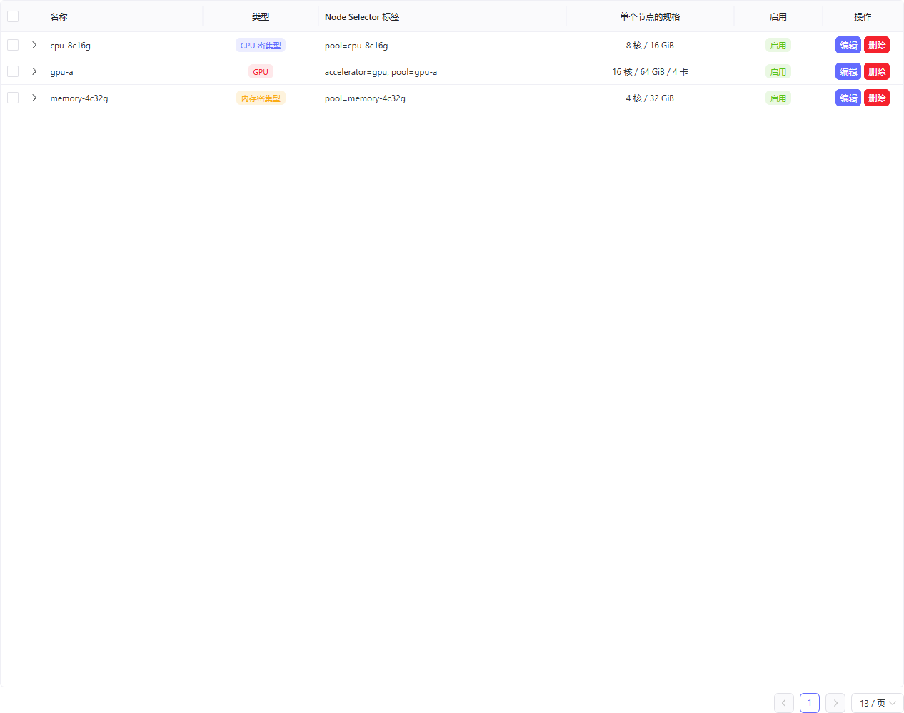
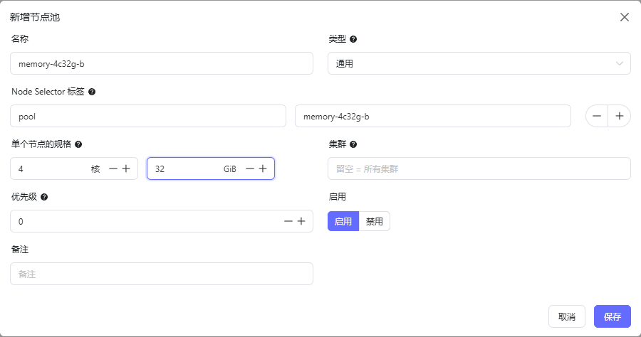
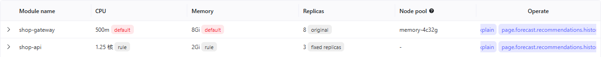

节点池是什么
节点池是一组同样规格的 Kubernetes 节点：用 Node Selector 标签区分，写明单个节点能给 Pod 的 CPU、内存（GPU 节点还有卡数）和用途。平台按模块单个 Pod 的 CPU、内存推荐最合适的节点池，和 CPU、内存、副本数的推荐一起展示；要不要真的把工作负载调过去，由模块的运行模式决定（见运行模式）。

怎么配置
一级菜单“节点池管理”，新增或编辑一个节点池：
| 配置项 | 含义 | 怎么配 |
|---|---|---|
| 名称 | 在同一个集群里不重复。 | 写出规格，例如 memory-4c32g。 |
| 类型 | CPU 密集型、内存密集型、GPU、通用。 | 按节点的核数和内存比选：8 核 16 GiB 是 CPU 型，4 核 32 GiB 是内存型，带 GPU 的是 GPU 型。 |
| Node Selector 标签 | 选中这个池子里节点的标签，可以写多个。 | 和节点上的标签一致，例如 pool = memory-4c32g。 |
| 单个节点的规格 | 一个节点能给 Pod 的 CPU 和内存（节点的 allocatable，不是整机规格）；GPU 池还要填每个节点的卡数。 | 启用的池子必须填：没有规格就没法算一个节点放几个 Pod。 |
| 集群 | 池子所在的集群；留空表示每个集群里都有这样标签的节点。 | 多集群且各自池子不同才填。 |
| 优先级 | 两个池子同样合适时，数字大的先推荐。 | 一般不用填。 |

怎么推荐
在模块的“节点池”一节打开“推荐节点池”。每次生成推荐时，平台拿这次推荐的单个 Pod 的 CPU、内存，对每个启用的池子算：一个节点放得下几个这样的 Pod，放满后 CPU 和内存各用掉多少。两项利用率的平均数最高的池子就是推荐的池子，平均数相同时看优先级，再看节点小的。
- 200m CPU、4 GiB 内存的 Pod：在 4 核 32 GiB 的池子里放 8 个，内存用满，CPU 只用 40%；在 8 核 16 GiB 的池子里放 4 个，内存用满，CPU 只用 10%，所以推荐内存密集型的池子。
- 2 核、3 GiB 的 Pod：在 8 核 16 GiB 的池子里放 4 个，CPU 用满，内存用 75%，推荐 CPU 密集型的池子。
- 要 GPU 的 Pod 只会被推荐到 GPU 池，不要 GPU 的 Pod 不会被推荐到 GPU 池。
- 一个节点放不下的 Pod、没启用的池子、别的集群的池子都不参与。

推荐了会怎么样
| 运行模式 | 节点池 |
|---|---|
| 仅观察 | 没有推荐，也就没有节点池。 |
| 仅推荐 | 只展示。 |
| 准入 | 工作负载创建或更新时，准入的回答里带着池子的 Node Selector，Kyverno 策略把它加到 Pod 上；池子的标签是每次回答时现读的，改了标签下一个 Pod 就用新的。 |
| 自动 | 同准入；Operator 以 --adjust-pod-spec 启动时，还会把 Node Selector 写到工作负载的 Pod 模板上，同时去掉别的池子的标签，会滚动更新 Pod。默认的 Operator 角色没有改工作负载的权限，要用 Helm 的 adjustPodSpec.enabled 或 deploy/operator/rbac/role-pod-spec.yaml 额外授权。 |
Operator 只从平台当次的回答里取要写的内容，不用它记住的旧回答：平台失联期间不会改工作负载的规格。